Inhalt Index DeskTop Bronstein

 Algebra und Diskrete Mathematik Logik Ausdrücke der Prädikatenlogik
Algebra und Diskrete Mathematik Logik Ausdrücke der Prädikatenlogik


Die Verneinung prädikatenlogischer Ausdrücke wird durch folgende Tautologien beschrieben:
| 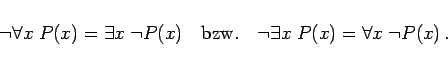 | (5.22) |
Damit sind die Quantoren 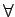 und 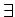 durcheinander ausdrückbar:
| 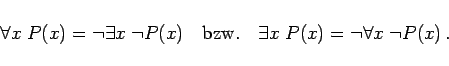 | (5.23) |
Weitere Tautologien der Prädikatenlogik sind:
| 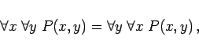 | (5.24) |
| 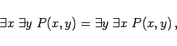 | (5.25) |
| 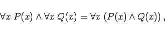 | (5.26) |
| 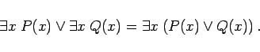 | (5.27) |
Außerdem gelten folgende Implikationen:
| 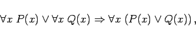 | (5.28) |
| 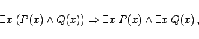 | (5.29) |
| 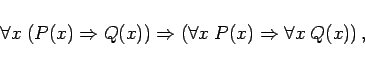 | (5.30) |
| 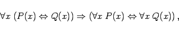 | (5.31) |
| 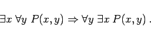 | (5.32) |
Die Umkehrungen dieser Implikationen gelten durchweg nicht. Insbesondere muß man beachten, daß verschiedene Quantoren nicht vertauschbar sind (s. letzte Implikation).